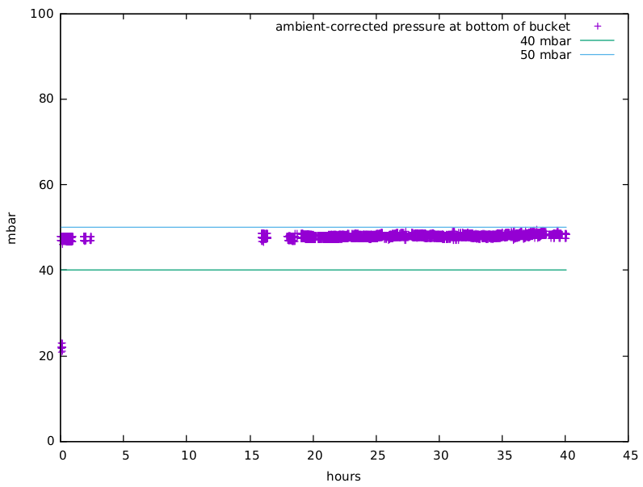

Conductivity before decoupling:
Initial conductivity calibration:

Conductiving after decoupling via radio:

Replacing conductivity probe in new solution:
Initial pressure comparison:

Pressure comparison, round 2:
Corrected pressure measurements: 
I unified the scripts for pulling in bucket pressure sensor and ambient pressure sensor data, so that they had identical timestamps, so that I could just subtract one from the other as a correction (see attached graphs. I tried to keep the y-axis scale the same for all graphs, and use a similar visual metric, so you can assess the relative correction.)
Then: I spent the last few days tracking down sources of noise in the conductivity expt. It was pretty good, but had a weird periodic wiggle / drift ... I did all the signal-chain things I could think of (made a better probe, shortened the wires for the analog measurement, compensated for temperature) ... but still a wiggle. Then thought: this has gotta be coupling in the measurement circuitry to fluctuations in power supply (a problem i'd had on a raspberry pi before). So I redid the conductivity measurement code on a radio-based microcontroller, and made the entire experiment battery-powered, broadcasting its data to another radio connected to the RPi. Now it's supersmooth!
So: both depth sensor and conductivity sensor seem quite stable now!
From the exchange with Liz Glivinski a while back:
For your calibrations, the Federal chloride standards translate to about 875-925 uS/cm for chronic exceedance and 2500-3000 uS/cm for acute exceedances. I will be in the office everyday expect Friday this week and next so feel free to give me a buzz if you have any questions.
I did a rough calibration on the sensor to get things into specific conductivity units; I think the current setup I've got can do up to around 3500 uS/cm; and on that ~14 hour run, it looks like the standard deviation in the conductivity sensor for a solution around 1400 uS/cm is about 4 uS/cm. So I'm getting pretty confident that we could pretty solidly distinguish 'below 900 uS/cm" from "somewhere 900 uS/cm and 2800" from "significantly above 3000 uS/cm". The next step for conductivity might be: make the prototype more solid, and co-deploy it alongside established sensors, to see how it behaves in the field.